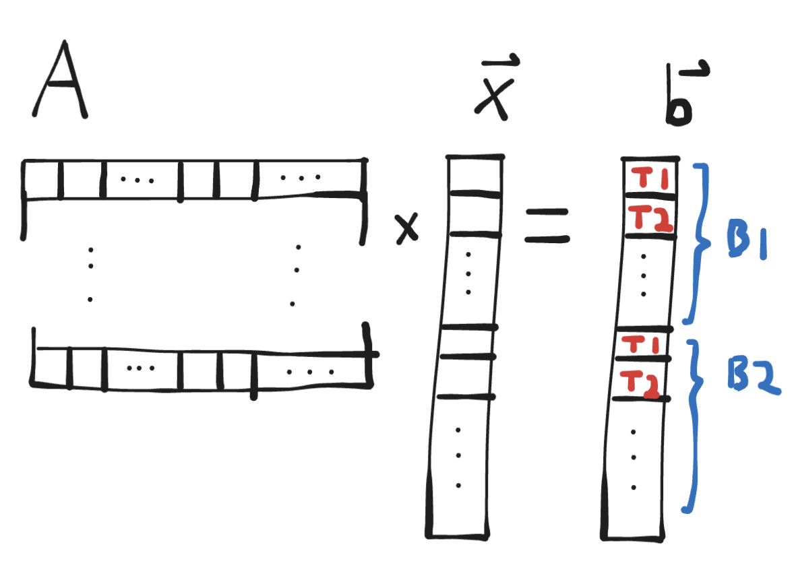
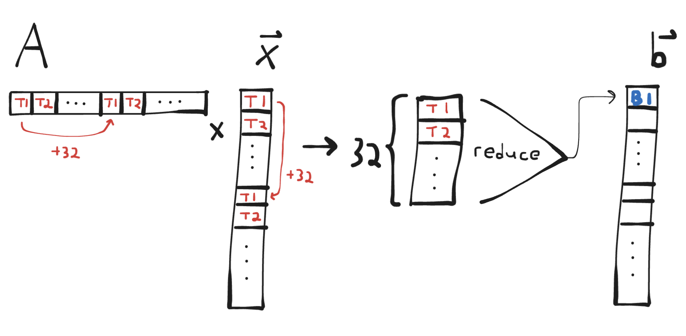
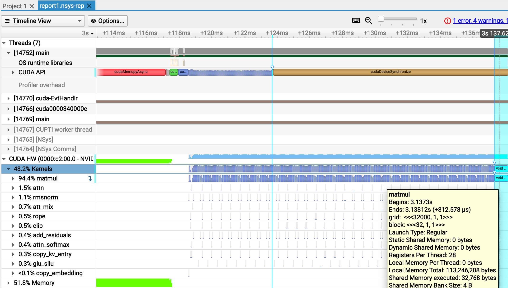
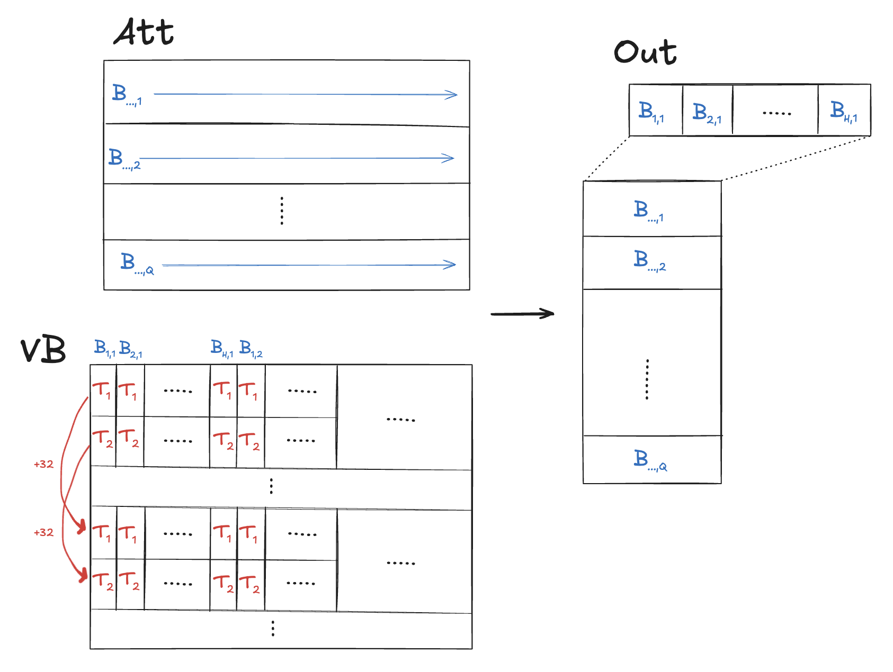
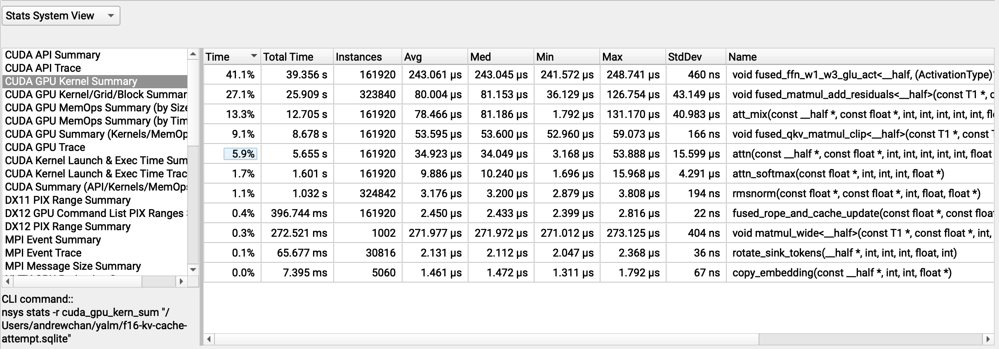
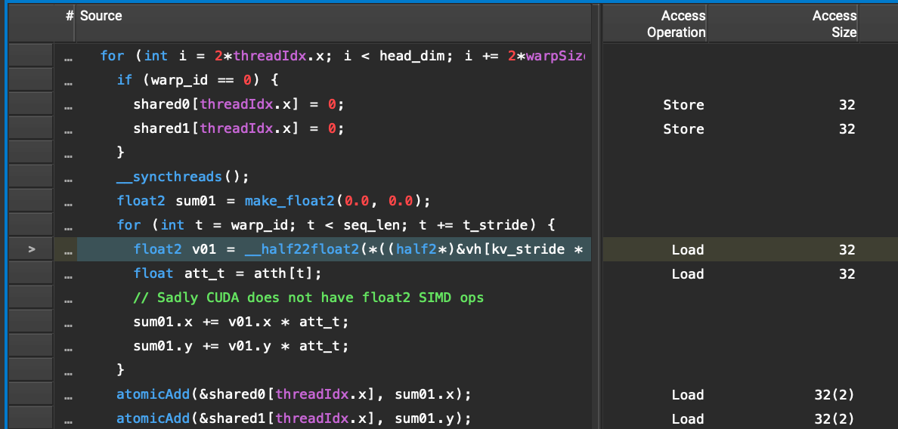
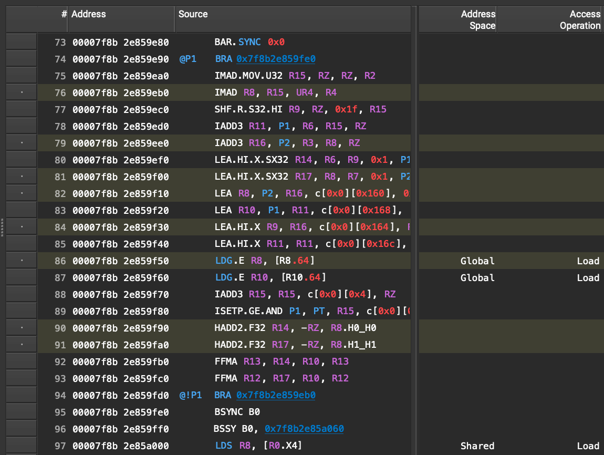

Contents
Fast LLM Inference From Scratch
Pushing single-GPU inference throughput to the edge without libraries
- Source code for this article on GitHub.
- Discussion on Hacker News.
This post is about building an LLM inference engine using C++ and CUDA from scratch without libraries.
Why? In doing so, we can learn about the full stack of LLM inference - which is becoming increasingly important
That's what we'll focus on: building a program that can load weights of common open models and do single-batch inference on them on a single CPU + GPU server, and iteratively improving the token throughput until it surpasses llama.cpp. Readers should have basic familiarity with large language models, attention, and transformers. The full source code is available on GitHub: yalm (Yet Another Language Model).
Acknowledgements
- calm - Much of my implementation is inspired by Arseny Kapoulkine's inference engine. In a way, this project was kicked off by “understand calm and what makes it so fast.” I've tried to keep my code more readable for myself though, and as much as possible scientifically understanding optimizations, which means foregoing some advanced techniques used in calm like dynamic parallelism.
- llama2.c - Parts of the CPU backend come from Andrej Karpathy's excellent C implementation of Llama inference.
1. Recap: LLM architectures and inference
Let's recap how LLMs work, starting with their architecture and then moving onto inference mechanics. This will provide a starting point for an optimized implementation and help us establish benchmarks.
Almost
- Grouped query attention (and multi-query attention)
- Mixture-of-experts-based feedforward networks
- GLU-based instead of MLP-based feedforward networks
- Different activation functions for feedforward networks
- Different layer normalizations
- Rotary position embeddings
Loading models from different architectures is thus essentially defining a customizable transformer block class, then creating a sequence of these configured with the right bells and whistles and initializing them with the safetensors weights. This article will focus on just one architecture - Mistral v0.2 - but if you're curious you can read how llama.cpp adds support for new models.
1.1 Inference overview
At a high level, inference looks like the C++ pseudocode below:
/* PSUEDOCODE */
void generate(Model& model, std::string prompt, int steps) {
std::vector<int> encoded = tokenizer.encode(prompt);
InferenceState s(model);
// 1. Prefill step: Forward the model on each prompt token, discarding
// the output. This lets the model read the prompt and hydrates the KV
// cache.
for (int token : encoded) {
model.forward(s, token);
}
// 2. Decode step: Forward the model repeatedly, generating 1 token at a time.
for (int i = 0; i < steps; i++) {
model.forward(s, encoded.back());
int next_token = sampler.sample(s.logits);
encoded.push_back(next_token);
std::cout << tokenizer.decode_one(next_token) << std::flush;
if (next_token == tokenizer.EOS) {
break;
}
}
}
We can start to see differences between training and inference immediately. Inference - at least the local kind that we care about - is usually single batch. For prompt completion and use cases like generating essays, the “decode phase” takes up the majority of execution and involves computing attention between the past context and just a single token (or query timestep).
The prefill step is more similar to training in that we're given a complete sequence to attend over, but more on that later. In chatbots there's also an “append” step when passing the model additional user messages which is like prefill, but I won't talk about that in this article as our implementation will support only completions.
The model forward pass looks like so:
/* PSUEDOCODE */
// InferenceState is the minimum set of buffers needed to
// hold state during the forward pass and exists to avoid
// extra allocations
void Model::forward(InferenceState& s, int token) {
// The embedding table maps token IDs to embedding vectors,
// which are copied into a buffer of the inference state
s.x = copy_embedding(token, this->token_embedding_table);
// Models consist of a sequence of transformer blocks which
// mutate the inference state in order
for (Block& b : this->blocks) {
b->block(s);
}
// Usually there is a layer norm right before the final classifier
s.x = layernorm(s.x, this->lm_head_prenorm_weights);
// Typically we end with a linear transform from (dim) -> (vocab_size)
s.logits = linear(s.x, this->lm_head_classifier_weights);
}
void Block::block(InferenceState& s) {
s.x_resid = layernorm(s.x, this->att_prenorm_weights);
// Multi-head attention typically includes:
// 1. RoPE on input (element-wise mutation w/ sines/cosines)
// 2. QKV matmuls and updating the KV cache
// 3. Causal self-attention, softmax, and value mixing
// 4. Projection back into the residual stream
s.x_resid = multi_head_attn(
s.x_resid,
this->wq,
this->wk,
this->wv,
this->key_cache,
this->value_cache
);
s.x += s.x_resid;
s.x_resid = layernorm(s.x, this->ffn_prenorm_weights);
// On modern architectures like Llama, this is a GLU feedforward
// with 3 linear transforms, not a simple MLP:
// -> w2(F.silu(w1(x)) * w3(x))
// Some architectures also split the FFN into a mixture of experts.
s.x_resid = ffn(s.x_resid, this->w1, this->w2, this->w3);
s.x += s.x_resid;
}
This should look roughly familiar, if expressed a bit more low-level in typical C++ fashion.
The main thing worth noting is that unlike training, inference can use a KV cache to store past keys and values for each block. We keep things simple and implement this as a simple ring buffer (known as sliding window attention in the literature), which is sufficient to support exact attention up to some maximum context length. Some exact attention implementations like PagedAttention use more complex KV caches to improve aspects like memory footprint.
1.2 Bottlenecks and benchmarks
Now we are ready to discuss bottlenecks and benchmarks. First, a fact: inference is memory-bandwidth-bound on modern hardware. For more, see this excellent blog post by Arseny Kapoulkine, but the gist of it is:
- Every time we generate a token we need to read the entire model, performing only a few floating point operations per weight.
- Modern CPUs and GPUs are extremely fast at floating point operations. The key metric is the FLOPs/s-to-memory-bandwidth-ratio (FLOPs/byte). For instance, the AMD Ryzen 7950X has about a 40:1 ratio, while the RTX 4090 has an 82:1 ratio. The AMD EPYC 7702P on my server has a less impressive, but still significant 10:1 ratio.
This is why model quantization is so effective at improving inference speed. It's not just allowing the hardware to use faster instructions (which is sometimes true), but also shrinking the input that we need to fit through the bandwidth bottleneck.
We can use bandwidth to establish a theoretical “speed of light”, or the max token throughput we can achieve. On my machine with an AMD EPYC 7702P and RTX 4090:
-
EPYC 7702P max bandwidth
See the official datasheet. :204.8 GB/s -
RTX 4090 max bandwidth
See wikipedia. :1008 GB/s -
Mistral-7B-Instruct-v0.2-FP32 with a 4k context window and FP32 KV-cache is
29516398592 bytes-
204.8e9 bytes/s / 29516398592 bytes/tok = ~6.9 tok/sfor EPYC 7702P - This won't fit in the 24GB of RTX 4090 VRAM so we'll skip it.
-
-
Mistral-7B-Instruct-v0.2-FP16 with a 4k context window and FP16 KV-cache is
15020875776 bytes-
204.8e9 bytes/s / 15020875776 bytes/tok = ~13.6 tok/sfor EPYC 7702P -
1008e9 bytes/s / 15020875776 bytes/tok = ~67.1 tok/sfor RTX 4090
-
Note that how close we can actually come to the theoretical bounds varies a bit depending on the hardware. We fortunately have a few popular inference
engines that we can look at to set more realistic targets. On my machine
| Program | Avg. throughput (~120 tokens) | Avg. throughput (~4800 tokens) |
|---|---|---|
| llama.cpp, CPU |
8.7 tok/s | 7.6 tok/s |
| huggingface transformers, GPU |
25.9 tok/s | 25.7 tok/s |
| llama.cpp, GPU | 61.0 tok/s | 58.8 tok/s |
| calm, GPU | 66.0 tok/s | 65.7 tok/s |
2. Inference on the CPU
We begin with a naive implementation on CPU (the code is available here). It's a straightforward single-threaded implementation with a 4k KV cache that only supports FP32 weights and no explicit SIMD of any kind. It achieves a blazing fast throughput of 0.6 tok/s. Here's what that looks like:
2.1 Multithreading
The first optimization step we can do is to begin parallelizing our code on the thread level. Equipped with our handy OpenMP pragmas, we go hunting for embarrassingly parallel opportunities. We'll optimize the same spots as llama2.c, and I'll go over each one to show the improvement.
First, adding a single line of code parallelizes our widely matrix-vector multiplication function so that each thread handles a row of the output:
static void matmul(float* xout, float* x, float* w, int n, int d) {
// W (d,n) @ x (n,) -> xout (d,)
int i;
#pragma omp parallel for private(i)
for (i = 0; i < d; i++) {
float val = 0.0f;
for (int j = 0; j < n; j++) {
val += w[i * n + j] * x[j];
}
xout[i] = val;
}
}
This is a big improvement that takes us to 4.2 tok/s with a bit of tuning to find the right number of threads:
Next, we can parallelize our multi-head attention computation (code here) so that each thread gets an attention head to compute. This is a less immediately clear improvement, but gets us to 4.4 tok/s for short context generations, and likely much better for long contexts.
2.2 Weight quantization and SIMD
The next potential opportunity is to use SIMD. The EPYC 7702P CPU supports AVX and AVX2, which let us work with 256-bit vectors of 8 packed float32 values at a time.
In our ubiquitous matmul function, we could try loading, multiplying, and accumulating 8 values at a time in the inner loop, which would let each thread finish
its row-column dot product up to 8 times faster!
Unfortunately, inspecting our compiled code via objdump reveals that matmul is in fact already using AVX instructions (notice vmovups) to perform a vectorized dot
product in the case that the inputs are large enough. It seems GCC is too smart:
1f5: c4 e3 7d 19 c1 01 vextractf128 xmm1,ymm0,0x1
1fb: c5 f0 58 c0 vaddps xmm0,xmm1,xmm0
1ff: c5 f8 12 c8 vmovhlps xmm1,xmm0,xmm0
203: c5 f0 58 c8 vaddps xmm1,xmm1,xmm0
207: c5 f0 c6 c1 55 vshufps xmm0,xmm1,xmm1,0x55
20c: c5 f8 58 c1 vaddps xmm0,xmm0,xmm1
Let's turn to quantization. We won't explore the full gamut of quantized formats, since the goal of this article is to explore the breadth of optimizations, and we've chosen our benchmarks with fixed formats. Instead, we'll just quantize our weights to FP16, which is the bare minimum needed to get it loaded onto the RTX 4090 VRAM anyway.
One hiccup is that many CPUs do not support native float16 math. But barring that, we'd like to keep our calculations in float32 as much as possible anyway to mitigate effects on accuracy, and we should be able to without trading off performance as long as bandwidth remains a bottleneck.
So instead we leverage the fact that many CPUs do still support converting float16 values to float32 via the F16C x86 extension (which has been well-supported for over a decade now) to load float16 weights and convert them to float32 just-in-time for calculations. Among other things, this requires us to explicitly vectorize the loads in our matmul function from before because GCC doesn't know how to handle the half-precision arrays:
// F16C code technically operates on 16-bit unsigned short integers
typedef uint16_t f16_t;
// matmul supporting float16 weights via the F16C extension, which allows
// conversion into float32 values before calculations.
static void matmul(float* xout, float* x, f16_t* w, int n, int d) {
#if defined(__AVX2__) && defined(__F16C__)
// W (d,n) @ x (n,) -> xout (d,)
assert(n % 16 == 0);
int i;
#pragma omp parallel for private(i)
for (i = 0; i < d; i++) {
// Vectorized dot product of w[i][:] and x[:] where w is a packed float16 array.
__m256 sumlo = _mm256_setzero_ps();
__m256 sumhi = _mm256_setzero_ps();
for (int j = 0; j < n; j+=16) {
// Extract the next set of 16 float16 weights from `w` and store them
// to two separate float32 vectors of width 8 (`wveclo_ps`, `wvechi_ps`)
__m256i wvec = _mm256_loadu_si256((__m256i*)&w[i * n + j]);
__m128i wveclo = _mm256_extractf128_si256(wvec, 0);
__m128i wvechi = _mm256_extractf128_si256(wvec, 1);
__m256 wveclo_ps = _mm256_cvtph_ps(wveclo);
__m256 wvechi_ps = _mm256_cvtph_ps(wvechi);
// Extract the next two float32 vectors of width 8 `xveclo`, `xvechi` from `x`
__m256 xveclo = _mm256_loadu_ps(&x[j]);
__m256 xvechi = _mm256_loadu_ps(&x[j + 8]);
// Compute vectorized FMAs: sumlo += wveclo * xveclo, sumhi += wvechi * xvechi
sumlo = _mm256_fmadd_ps(wveclo_ps, xveclo, sumlo);
sumhi = _mm256_fmadd_ps(wvechi_ps, xvechi, sumhi);
}
// Horizontally reduce width-8 float32 vectors sumlo, sumhi to a scalar.
__m256 sum8 = _mm256_add_ps(sumlo, sumhi); // sum8[0:8] = sumlo[0:8] + sumhi[0:8]
__m128 sum4 = _mm_add_ps( // sum4[0:4] = sum8[0:4] + sum8[4:8]
_mm256_extractf128_ps(sum8, 0),
_mm256_extractf128_ps(sum8, 1)
);
__m128 sum1 = _mm_dp_ps(sum4, _mm_set1_ps(1.0f), 0xf1); // sum1[0] = dot(sum4, [1,1,1,1])
xout[i] = _mm_cvtss_f32(sum1);
}
#else
assert(false && "float16 not supported on this platform");
#endif
}
The resulting implementation does not yield any difference in perplexity for short texts. It's also nearly twice as fast at 8.2-8.4 tok/s:
3. Inference on the GPU
Having quantized our model to half its size, we can now load it onto our RTX 4090 and begin a GPU inference implementation. Remember our rules: raw C++/CUDA only, no CUTLASS, cuBLAS, cuDNN, or other libraries.
If you haven't seen CUDA code before, see An Easy Introduction to CUDA C and C++ for a good intro. At a high level, CUDA allows you to execute a C++ function (”kernel”) on the GPU in parallel over a grid of threads where:
-
Each thread receives the same function arguments as all the others, but can make its own local variables, and is assigned its own
threadIdxwhich can be used to determine what work it is responsible for. -
Threads are additionally organized into blocks which have their own
blockIdxand a fixed number of threads (blockDim). Threads in the same block can efficiently cooperate by sharing data through shared memory, which is faster than the global memory that all threads in a grid may otherwise access. -
The number of blocks and threads per block is specified when invoking a kernel in triple-chevrons
<<< numBlocks, threadsPerBlock >>>and may be given asintordim3.
3.1 A naive port to CUDA
A first, naive implementation in 270 lines of C++/CUDA attempts to translate our CPU operations 1-1 to kernels, with some extra kernels for things like vector additions.
So we end up with a fairly long list of kernels, but more importantly, host C++ code in our GPU backend which looks almost like our CPU backend,
but with <<< . >>> attached to the function calls. For instance, here's the half of our block forward pass
in our GPU backend where we pass the activations through a feedforward network before adding back as residuals:
// mix self.w2(F.silu(self.w1(x)) * self.w3(x))
// Note this is a feedforward with a GLU, not a simple MLP.
matmul<<<c.hidden_dim, WARP_SIZE>>>(
w1(), s.xb(), c.dim, c.hidden_dim, s.hb()
);
matmul<<<c.hidden_dim, WARP_SIZE>>>(
w3(), s.xb(), c.dim, c.hidden_dim, s.hb2()
);
glu_gelu<<<
(c.hidden_dim + MAX_THREADS_PER_BLOCK - 1)/MAX_THREADS_PER_BLOCK,
MAX_THREADS_PER_BLOCK,
>>>(
s.hb(), s.hb2(), s.hb()
);
matmul<<<c.dim, WARP_SIZE>>>(
w2(), s.hb(), c.hidden_dim, c.dim, s.xb2()
);
// ffn residual back into x
add_residuals<<<
(c.dim + MAX_THREADS_PER_BLOCK - 1)/MAX_THREADS_PER_BLOCK,
MAX_THREADS_PER_BLOCK
>>>(
s.x(), s.xb2(), c.dim, s.x()
);
And the corresponding CPU code:
// mix self.w2(F.silu(self.w1(x)) * self.w3(x))
// Note this is a feedforward with a GLU, not a simple MLP.
matmul(s.hb(), s.xb(), w1<T>(), c.dim, c.hidden_dim);
matmul(s.hb2(), s.xb(), w3<T>(), c.dim, c.hidden_dim);
for (int i = 0; i < c.hidden_dim; ++i) {
s.hb()[i] = gelu(s.hb()[i]) * s.hb2()[i];
}
matmul(s.xb2(), s.hb(), w2<T>(), c.hidden_dim, c.dim);
// residual connection back into x
for (int i = 0; i < c.dim; ++i) {
s.x()[i] += s.xb2()[i];
}
This works because even though CUDA kernels are executed asynchronously, kernels on the same stream (or the default stream) will never execute concurrently; one starts only when the previous finishes all threads. So we just need to have our final kernel write to device-mapped memory on the host and perform a deviceSync at the end of the forward pass so that the output is available for sampling.
3.2 Better matmuls
An interesting deep dive here is our matmul kernel. We saw earlier that this function was a huge piece of runtime on the CPU, and optimizing it
via OpenMP yielded huge wins. So let's make sure matmul is well-optimized before proceeding.
A naive implementation of matmul might look something like our OpenMP-parallelized CPU code, where we have each GPU thread handle computing 1 row (element) of the resulting vector:
__global__
void matmul(const float* A, const float* x, int n, int d, float* out) {
// A (d,n) @ x (n,) -> out (d,)
int i = blockIdx.x * blockDim.x + threadIdx.x;
if (i >= d) return;
float sum = 0.0;
for (int j = 0; j < n; j++) {
sum += A[n * i + j] * x[j];
}
out[i] = sum;
}
/* usage */
int MAX_THREADS_PER_BLOCK = 1024;
matmul<<<
(d + MAX_THREADS_PER_BLOCK - 1)/MAX_THREADS_PER_BLOCK,
MAX_THREADS_PER_BLOCK
>>>(A, x, n, d, out);

One big problem with this approach is that it will under-utilize our CUDA cores. Mistral-7B has a transformer input/output dimension of 4096, so if we're computing (for example) the last matmul before the output, we'll spin up 4096 threads. But an RTX 4090 can have 16384 simultaneous threads! Many of our cores will be sitting idle and we won't reach full FLOPs/s.
In addition to FLOPs, there's also memory load coalescing issues with this kernel - but more on that later. Suffice to say that substituting this kernel in for the one that we end up with leads to a throughput of 2.9 tok/s - slower than our CPU backend!
A better idea is to have one block per row. Threads within a block can efficiently cooperate, so we'll be able to leverage more threads to speed up computing the result for a single row. In this setup, each block will have exactly 1 warp (a smaller group of threads within a block which are a fundamental execution unit on the hardware, with their own cooperation primitives), then we'll use a warp-stride loop to sum across the entire row. At the end, we can perform a warp sum reduction to combine results from all threads:
__device__
inline float warp_reduce_sum(float val) {
for (int offset = WARP_SIZE / 2; offset > 0; offset /= 2)
val += __shfl_down_sync(0xffffffff, val, offset);
return val;
}
__device__
inline float matmul_row(const float* row, const float* x, int offset, int dim) {
float sum = 0.0;
for (int j = offset; j < dim; j += WARP_SIZE) {
float v = row[j] * x[j];
sum += v;
}
return warp_reduce_sum(sum);
}
__global__
void matmul(const float* A, const float* x, int n, int d, float* out) {
// A (d,n) @ x (n,) -> out (d,)
// PRECOND: Blocks are 1-D and same size as warp.
int i = blockIdx.x;
if (i >= d) return;
int offset = threadIdx.x;
float rowSum = matmul_row(&A[n * i], x, offset, n);
if (threadIdx.x == 0) {
out[i] = rowSum;
}
}
/* usage */
int BLOCK_SIZE = WARP_SIZE;
matmul<<<d, BLOCK_SIZE>>>(A, x, n, d, out);

We can adapt the above kernel to blocks with more than one warp (it's easiest to keep 1 warp per row) as well. I will leave this and the question of why that might be a good idea as an exercise for the reader. :)
This kernel has much better thread utilization and memory read coalescing. With it configured to 1 warp per block, even with the near-1-1 arrangement of functions to kernels, we get a throughput of 51.7 tok/s - pretty good performance for a preliminary implementation! That said, we still have a ways to go before catching up to llama.cpp or calm - what can we improve?
3.3 Fusing and even better matmuls
Profiling a generation with nsys shows a few interesting things. First, we see that our GPU is being used for nearly the entire generation time, despite
the host-device syncs at the end of every forward pass. There are some gaps in the device thread, indicating occasional idle time, but they are on the
order of microseconds, which means we aren't ever CPU-bound:
Second, we can see that 94.4% of our kernel executions are matrix multiplications:
This means that if we were to get rid of every other kernel, we'd at best run in 94.4% of our current time, which would take us from 51.7 tok/s to 54.8 tok/s throughput, which is not quite at our goal. So we still need to optimize our matrix multiplications.
That said, we can approximate getting rid of other kernels by fusing them together. In particular, there are a few kernels that we can fuse into the nearest matmul,
and a few matmuls that we can fuse together. For example, we can fuse together matmul and add_residuals into a single fused_matmul_add_residuals
that directly sums to the destination. The Mistral architecture also performs a gated sum of 2 matmuls at some point: F.silu(w1(x)) * w3(x) - and we can do
all of this in one kernel as all operations have 1 thread write to 1 element of the output vector, and all have the same dimension output.
This can let us “blend” together 2 dependent operations. For the first example, add_residuals could not begin until all threads of matmul finished,
which is problematic if individual threads of matmul take longer. Additionally we avoid one extra read and write from each thread to global memory.
For the curious, the full change is here. This takes us to 54.1 tok/s!
Now we can return to optimizing matmul. From profiling via ncu, matmul writes are not optimally coalesced. The relevant warning diagnostic
is shown below:
Section: Memory Workload Analysis
--------------------------- ------------ ------------
Metric Name Metric Unit Metric Value
--------------------------- ------------ ------------
Memory Throughput Gbyte/second 533.22
Mem Busy % 24.82
Max Bandwidth % 90.26
L1/TEX Hit Rate % 65.94
L2 Compression Success Rate % 0
L2 Compression Ratio 0
L2 Hit Rate % 2.03
Mem Pipes Busy % 28.33
--------------------------- ------------ ------------
Section: Memory Workload Analysis Tables
...
----- --------------------------------------------------------------------------------------------------------------
WRN The memory access pattern for stores from L1TEX to L2 is not optimal. The granularity of an L1TEX request to
L2 is a 128 byte cache line. That is 4 consecutive 32-byte sectors per L2 request. However, this kernel only
accesses an average of 1.0 sectors out of the possible 4 sectors per cache line. Check the Source Counters
section for uncoalesced stores and try to minimize how many cache lines need to be accessed per memory
request.
----- --------------------------------------------------------------------------------------------------------------
...
At this point it's helpful to define what it means for a load or store to global memory to be coalesced in CUDA. When threads in the same warp issue loads or stores to global memory, the loads or stores can be grouped together and performed as a single transaction if they are appropriately aligned and refer to consecutive regions of memory (see the diagrams in this excellent SO post).
This is important because GPU global memory transactions can only be done at certain levels of granularity (32, 64, or 128 bytes). So if 32 threads in the same warp are reading or writing to distinct 4-byte floats, if the access is coalesced, a single transaction of 128 bytes will be performed, whereas if the access is not coalesced, 32 transactions of 32-bytes each may be performed, wasting a ton of bandwidth.
In our matmul kernel, reads are coalesced, but writes are not. We have 1 warp per block with each warp handling 1 output element,
so we are issuing 1 write per block of minimum size 32 bytes but only updating a single 4-byte element. Increasing the number of
warps per block does not help because coalescing is done at the warp level, not the block level.
Instead, we can have each warp compute their own result, but then collect all results into lanes of the first warp, then have the first warp issue a single coalesced write. The block-wide collection can be done fast through shared memory. The kernel:
__device__ inline float blocktranspose(float v, float def) {
// Performs block-and-warp transpose operation:
// For a block containing K warps where lane 0 contains val_k,
// this function returns:
// - For warp 0, lane K: val_k
// - For all other warps and lanes: def
int lane = threadIdx.x % warpSize;
int warp = threadIdx.x / warpSize;
// Will hold results of all warps.
// Each lane of the warp accumulates across 1 head element at a time.
// NOTE: Assumes warpSize is 32
__shared__ float sm[32];
if (lane == 0) sm[warp] = v;
__syncthreads();
return lane < blockDim.x / warpSize ? sm[lane] : def;
}
template <typename T>
__global__
void matmul_wide(const T* A, const float* x, int n, int d, float* out) {
// A (d,n) @ x (n,) -> out (d,)
// PRECOND: Block is 1-D and contains WPB warps.
int i = (blockIdx.x * blockDim.x + threadIdx.x) / warpSize;
if (i >= d) return;
// Warp j computes sum for row at <blockIdx.x*WPB + j>
// Lane 0 of each warp will hold result
int k = threadIdx.x % warpSize;
float rowSum = matmul_row(&A[n * i], x, k, n);
// Transpose values so lane k in warp 0 contains row at <blockIdx.x*WPB + k>
// For WPB=32, this allows us to coalesce 32 float32 writes into a single 128-byte store
rowSum = blocktranspose(rowSum, 1.0);
if (threadIdx.x < blockDim.x / warpSize) {
int block_start_i = blockIdx.x * blockDim.x / warpSize;
out[block_start_i + k] = rowSum;
}
}
Profiling this with ncu shows a nearly 10% improvement (from 600 usecs to 550 usecs) on toy matrix dimensions.
After adapting the final LM classifier and block fused_matmul_add_residual kernels to use this improved coalescing,
we reach 56.1 tok/s throughput:
3.4 Attention and long context generation
One major opportunity for improvement is in long context generations. When generating 5k tokens, our model's average throughput degrades to ~48 tok/s and attention kernels go from ~5% to >10% of runtime. Compare this to llama.cpp and calm, which are able to maintain throughput in the high 50s or greater. What's going on?
With short context lengths, attention is fast - as there are not too many tokens to communicate over - and decoding is instead dominated by other, non-context sensitive operations such as generating the q/k/v vector representations of the input and passing the attention block output through the feedforward network.
The story is different with long contexts. This is constrained with sliding window attention, but as window size approaches hidden dimension, I'd expect attention runtime to approach that of our feedforward network.
More precisely, let's consider how 2 attention operations (computing the attention scores, and using them to mix values) compare to a single matrix multiply from dim to hidden_dim (the feedforward, which in modern architectures is based on a GLU rather than a simple MLP, should effectively contain 3 of these). We have...
-
Matmul going from
dimtohidden_dim:n_headsdot products of sizehead_dimper row,hidden_dimrowsn_heads * hidden_dimdot products of sizehead_dim
-
Attention over sequence of length
seq_len:n_heads * seq_lendot products of sizehead_dim
-
Attention mix over sequence of length
seq_len:n_heads * seq_lenmultiply-adds (of a vector of sizehead_dim)
In our benchmark, we use Mistral-v0.2 7B with seq_len=4096 and hidden_dim=14336, so we'd expect our FFN matmuls to have roughly 3.5x the runtime of
our attention kernels.
We can see that this is about right for attn (our scoring kernel) which takes about ~50 μs vs. ~150 μs for the final FFN matmul:
However, something weird is going on with our att_mix kernel, which is taking ~150 μs, the same amount of time as our FFN matmuls!
Profiling att_mix alone with ncu reveals that the kernel has serious memory bandwidth issues - it only uses 8% of memory throughput!
att_mix(const float *, const float *, int, int, int, int, int, float *) (32, 128, 1)x(32, 1, 1), Context 1, Stream 7, Device 0, CC 8.6
Section: GPU Speed Of Light Throughput
----------------------- ------------- ------------
Metric Name Metric Unit Metric Value
----------------------- ------------- ------------
DRAM Frequency cycle/nsecond 6.27
SM Frequency cycle/nsecond 1.33
Elapsed Cycles cycle 5765045
Memory Throughput % 8.81
DRAM Throughput % 1.68
Duration msecond 4.35
L1/TEX Cache Throughput % 5.17
L2 Cache Throughput % 8.81
SM Active Cycles cycle 5685841.81
Compute (SM) Throughput % 0.47
----------------------- ------------- ------------
WRN This kernel exhibits low compute throughput and memory bandwidth utilization relative to the peak performance
of this device. Achieved compute throughput and/or memory bandwidth below 60.0% of peak typically indicate
latency issues. Look at Scheduler Statistics and Warp State Statistics for potential reasons.
What's going on here? First let's review what this kernel is supposed to do, then the kernel code itself.
-
Given 2 tensors in row-major order:
-
att- attention scores with shape(n_heads, kv_len) -
vb- value vectors with shape(max_seq_len, n_kv_heads, head_dim)
-
-
We want to output a tensor
outof shape(n_heads, head_dim)whereout[q] = att[q, :] @ vb[:, q//G, :]whereG = n_heads//n_kv_headsis the size of a group in grouped-query attention. -
Below, we assume the number of timesteps in our KV cache
kv_lenis equal tomax_seq_len:
Below is the naive kernel that we've been using to do this. The idea is to spin up a block for every element out[q, i] that we need to compute.
The threads of the block distribute over and mix the range of values vb[:, q//G, i] using a block-stride loop, then combine their results with a block sum
reduction (below, we assume every block is the size of a warp so we can use efficient more warp reductions):
__device__
inline float warp_reduce_sum(float val) {
for (int offset = WARP_SIZE / 2; offset > 0; offset /= 2)
val += __shfl_down_sync(0xffffffff, val, offset);
return val;
}
__global__
void att_mix(
const float* vb, // (max_seq_len, n_kv_heads, head_dim)
const float* att, // (n_heads, kv_len)
int head_dim,
int n_heads,
int n_kv_heads,
int seq_len,
int max_seq_len,
float* out // (n_heads, head_dim)
) {
// PRECOND: blocks are 1-D and blockDim.x == WARP_SIZE
int h = blockIdx.x;
int group_size = n_heads / n_kv_heads;
int g = h / group_size;
int i = blockIdx.y;
int offset = threadIdx.x;
int kv_stride = n_kv_heads * head_dim;
const float* atth = att + max_seq_len * h;
const float* vh = vb + head_dim * g;
float* outh = out + head_dim * h;
float sum = 0.0;
for (int t = offset; t < seq_len; t += WARP_SIZE) {
sum += vh[kv_stride * t + i] * atth[t];
}
sum = warp_reduce_sum(sum);
if (offset == 0) outh[i] = sum;
}
/* usage */
dim3 tpb;
tpb.x = WARP_SIZE;
dim3 blocks;
blocks.x = n_heads;
blocks.y = head_dim;
att_mix<<<blocks, tpb>>>(
vb, att,
head_dim, n_heads, n_kv_heads,
seq_len, max_seq_len, out
);
Visualized below, we can see one big problem - the threads of each block are not accessing contiguous memory and so cannot coalesce any of their loads!
Here's a first shot at improving the coalescing:
-
Have multiple blocks write to a single output element
out[h, i]. - Partition the sequence into contiguous time chunks for each block to handle. This can be done using the y-dimension of our grid. However, we still want the x-dimension to correspond to heads.
-
Blocks should handle multiple output elements. 1 warp per block.
iis determined by warp ID. This allows warps to coalesce loads. -
Threads use
atomicAddto accumulate result toout[h, i].
In code:
__global__
void att_mix(
const float* vb, // (max_seq_len, n_kv_heads, head_dim)
const float* att, // (n_heads, kv_len)
int head_dim,
int n_heads,
int n_kv_heads,
int seq_len,
int max_seq_len,
float* out // (n_heads, head_dim)
) {
// PRECOND: blocks are 1-D and `out` has been zeroed
int h = blockIdx.x;
int group_size = n_heads / n_kv_heads;
int g = h / group_size;
int kv_stride = n_kv_heads * head_dim;
const float* atth = att + max_seq_len * h;
const float* vh = vb + head_dim * g;
float* outh = out + head_dim * h;
int t_per_thread = seq_len / gridDim.y;
int t_start = blockIdx.y * t_per_thread;
for (int i = threadIdx.x; i < head_dim; i += blockDim.x) {
float sum = 0.0;
for (int t = t_start; t < t_start + t_per_thread; t++) {
sum += vh[kv_stride * t + i] * atth[t];
}
atomicAdd(&outh[i], sum);
}
}
int max_t_per_thread = 256;
dim3 tpb;
tpb.x = warp_size;
dim3 blocks;
blocks.x = c.n_heads;
blocks.y = (kv_len + max_t_per_thread - 1) / max_t_per_thread;
cudaMemset(s.xb2(), 0, c.n_heads * c.head_dim * sizeof(float));
att_mix<<<blocks, tpb>>>(
vb, s.att(),
c.head_dim, c.n_heads, c.n_kv_heads,
kv_len, c.max_seq_len, s.xb2()
);
Drawn out, we can see that the threads of each block are now loading contiguous elements of vb with each iteration of their inner loop:
Substituting this kernel speeds things up a lot for both long and (surprisingly) short context generations - we go from ~56 tok/s and ~48 tok/s respectively to
~63 tok/s and ~57 tok/s! Profiles also reveal that att_mix now takes around the same time as attn, as we expect.
Unfortunately, long context generations also noticeably degrade in both subjective quality and perplexity (around ~5x increase for one 4000-token text).
As it turns out, the problem is that atomicAdd operations to global memory sneakily don't add very small float values (on the order of 1e-40) as
they're considered subnormal values which global atomics always flush to zero.
According to this 2013 forum post, this shouldn't happen with
atomicAdd ops to shared memory, so here's a re-write of our kernel to accumulate results in block shared memory
and write to global memory when finished:
__global__
void att_mix(
const float* vb, // (max_seq_len, n_kv_heads, head_dim)
const float* att, // (n_heads, kv_len)
int head_dim,
int n_heads,
int n_kv_heads,
int seq_len,
int max_seq_len,
float* out // (n_heads, head_dim)
) {
// PRECOND: blocks are 2-D (warp_size, t_stride)
int h = blockIdx.x;
int group_size = n_heads / n_kv_heads;
int g = h / group_size;
int kv_stride = n_kv_heads * head_dim;
const float* atth = att + max_seq_len * h;
const float* vh = vb + head_dim * g;
float* outh = out + head_dim * h;
int warp_id = threadIdx.y;
int t_stride = blockDim.y;
// Capacity 32 since there can be at most 32 warps in a block.
__shared__ float shared[32];
for (int i = threadIdx.x; i < head_dim; i += warpSize) {
if (warp_id == 0) {
shared[threadIdx.x] = 0;
}
__syncthreads();
float sum = 0.0;
for (int t = warp_id; t < seq_len; t += t_stride) {
sum += vh[kv_stride * t + i] * atth[t];
}
atomicAdd(&shared[threadIdx.x], sum);
__syncthreads();
if (warp_id == 0) {
outh[i] = shared[threadIdx.x];
shared[threadIdx.x] = 0;
}
}
}
dim3 tpb;
tpb.x = warp_size;
tpb.y = min(kv_len, max_threads_per_block / warp_size);
dim3 blocks;
blocks.x = c.n_heads;
att_mix<<<blocks, tpb>>>(
vb, s.att(),
c.head_dim, c.n_heads, c.n_kv_heads,
kv_len, c.max_seq_len, s.xb2()
);
This fixes our quality issues while maintaining the same speed at ~63.7 tok/s for a short generation:
This finally gets us past llama.cpp's short generation throughput of 61.0 tok/s (see §1.2)!
3.5 KV quantization and compiler gotchas
This last section is about KV cache quantization, which is a common optimization we haven't done yet, but also about some of
the optimizations that the nvcc CUDA compiler does for you automatically, what can happen when they break, and how to fix them.
Earlier we saw how automatic vectorization needed to be made explicit when working with FP16 weights in our CPU backend, and as
we'll see, switching to an FP16 KV cache will require similar work.
First, a bit about KV cache quantization:
- In our benchmark setting earlier (§1.2), llama.cpp and calm were actually using FP16 KV cache entries (because that is their default setting), and we calculated the speed-of-light assuming the same.
- Quantizing KV cache entries from FP32 to FP16 will not yield as large of a win as quantizing our weights did, since the KV cache comprises a much smaller part of the total memory, but we still expect a win nonetheless as the total memory read each forward pass will go from ~15.5 GB to ~15.0 GB. The effect should be largest for long contexts and our attention kernels, as the KV cache is only used in attention.
Just switching our KV cache from FP32 to FP16 (while still performing computations in FP32, just like weight quantization) is simple
and boils down to replacing float* with half* and inserting the __half2float intrinsic in a
few key places: see the code change here.
Ensuring that it's performant is another story.
Rather than make things faster, the naive patch above actually causes things to get slower. Long context generations are especially
impacted, with throughput down to ~53.6 tok/s from ~57 tok/s, and the att_mix kernel going from 5.5% (29 μs avg.) to a whopping 13.3%
of runtime (78 μs).
nsys profile of a long context generation with FP32 KV cache
The same profile with our naive patch switching to FP16 KV cache
An ncu profile on a toy example reveals that memory throughput for the att_mix kernel has gotten much worse,
going from ~25.7% of the memory speed of light to ~6.8% and 140 μs to 309 μs. Why? One issue may be that we are simply issuing
smaller memory transactions than we previously did in each iteration of our loop. Recall that in att_mix, each thread accumulates
a sum over timesteps t like so:
float sum = 0.0;
for (int t = warp_id; t < seq_len; t += t_stride) {
sum += vh[kv_stride * t + i] * atth[t];
}
// atomicAdd `sum` when we're done
vh is now a half-precision array, so loads from it must be converted to FP32 before being used. Our naive
patch does this by simply inserting a __half2float call:
float sum = 0.0;
for (int t = warp_id; t < seq_len; t += t_stride) {
sum += __half2float(vh[kv_stride * t + i]) * atth[t];
}
// atomicAdd `sum` when we're done
This results in lower throughput because even though loads are still being coalesced in each warp for each loop iteration,
they are coalesced to 32 16-bit loads, or 64 bytes, which is lower than the maximum coalesced transaction size of 128 bytes
that can be issued by a warp. We can try recovering this performance by vectorizing the loads into half2 loads like so:
float2 sum01 = make_float2(0.0, 0.0);
for (int t = warp_id; t < seq_len; t += t_stride) {
float2 v01 = __half22float2(*((half2*)&vh[kv_stride * t + i]));
float att_t = atth[t];
// Sadly CUDA does not have float2 SIMD ops
sum01.x += v01.x * att_t;
sum01.y += v01.y * att_t;
}
// atomicAdd both `sum01` lanes when we're done
This attempt (full patch here) improves the throughput somewhat, but it's still worse than the float32 version (188 μs vs. 140 μs, memory throughput 9.8% vs. 25.7%).
What's going on? Our KV cache loads should be coalesced to the same sizes as the FP32 version. The final writes we do are
double the size, but reads far outnumber writes, and they should also still be coalesced. For hints, we collect a more
detailed ncu profile with -set full and -o report to get a file that we can view in the NCU UI.
With this, we can see a very powerful line-by-line breakdown of the kernel being executed, with relevant stats and the corresponding
PTX and SASS instructions per line. In particular we see that the line loading from vb in the FP32 kernel is secretly
performing 8 32-bit loads:
...while the corresponding line in the FP16 kernel is performing only 1 32-bit load:

Digging deeper, we can see that the compiled SASS instructions for the FP32 kernel have not only unrolled the loop into 4 iterations
(=8 loads) at a time, but are also arranging the load (LDG.E) and arithmetic (FFMA) instructions so that the loads can be
prefetched:
The highlighted lines all correspond to the single selected line in the CUDA code above in the FP32 kernel.
Prefetching is a big boost for loops where each iteration loads from global memory and is independent from the results of previous iterations. By unrolling 4 iterations of the loop and re-arranging all loads upfront, the compiler is able to hide the latency of the loads for the latter 3 iterations.
The FP16 kernel SASS does not even unroll any loop iterations, let alone rearrange loads:

So how do we get prefetching in the FP16 kernel? Unfortunately, just adding #pragma unroll to the loop does
not cut it (at least on my nvcc and machine setup). We are at the whim of compiler heuristics; they gaveth to our FP32 kernel
but now taketh away, and may continue to taketh away unless we instead
manually unroll and prefetch values.
Below, we have unrolled into 16 iterations (=32 loads) at a time, with some extra code to handle the iterations modulo 16.
We perform a batched prefetch
float2 sum01 = make_float2(0.0, 0.0);
constexpr int UNROLL = 16;
half2 v01_0; float att_0;
half2 v01_1; float att_1;
half2 v01_2; float att_2;
/* ... SNIP ... */
half2 v01_15; float att_15;
int t = warp_id;
for (int ctr = 0; ctr < seq_len / t_stride; t += t_stride, ctr++) {
int ctr_mod = ctr % UNROLL;
if (ctr_mod == 0) {
// prefetch every UNROLL iterations
#define PREFETCH(j) \
v01_##j = *((half2*)&vh[kv_stride * (t + j*t_stride) + i]); \
att_##j = atth[t + j*t_stride];
PREFETCH(0)
PREFETCH(1)
PREFETCH(2)
/* ... SNIP ... */
PREFETCH(15)
#undef PREFETCH
}
// pull one value out of prefetch batch
float2 v01;
float att_t;
switch (ctr_mod) {
#define CASE(j) \
case j: v01 = __half22float2(v01_##j); att_t = att_##j; break;
CASE(0)
CASE(1)
CASE(2)
/* ... SNIP ... */
CASE(15)
#undef CASE
}
// Sadly CUDA does not have float2 SIMD ops
sum01.x += v01.x * att_t;
sum01.y += v01.y * att_t;
}
// Handle any loop remainder that can't be unrolled
for (; t < seq_len; t += t_stride) {
float2 v01 = __half22float2(*((half2*)&vh[kv_stride * t + i]));
float att_t = atth[t];
sum01.x += v01.x * att_t;
sum01.y += v01.y * att_t;
}
// atomicAdd both `sum01` lanes when we're done
The resulting kernel (full code here) finally gets us the expected wins, getting ~75 μs vs. ~140 μs for the FP32 kernel in our toy ncu benchmark.
And long context generations get faster as expected, from just over 57 tok/s to 58.8 tok/s. To top it all off, here's a video of
short context generation, where we get over 63.8 tok/s:
With this patch, we're now neck-and-neck with llama.cpp for long-context generations - at 58.7 tok/s vs. 58.8 tok/s - while handily beating it for short contexts at 63.8 tok/s vs. 61.0 tok/s. Not bad!
4. What's next
Through this post, we've achieved close to state-of-the-art performance for a specific use case: local, completion-only, single-batch, single-GPU inference on one model. We were able to do so with no libraries - just a few major optimizations and a lot of CUDA/C++ elbow grease:
- Multithreading and vectorization on the CPU
- Matmul warp reductions + coalescing, kernel fusing, and better attention in our GPU backend
- Weight + KV cache quantization for both backends
That said, we've only scratched the surface of LLM inference performance. Even in our specific use case there are lots of improvements to be made.
One big opportunity is in the prompt pre-filling phase, where we have an existing sequence, similar to training time. A common optimization here is to use matrix-matrix multiplication instead of matrix-vector to prefill multiple KV cache entries at once; this would improve the time-to-first-token, a metric just as important as raw token throughput for many applications. This also forms the basis of the speculative decoding generation idea, which takes advantage of the fact that pre-filling K tokens is not that much slower than generating a single token.
Another opportunity is to fuse our attention kernels, which the naive implementation split into separate scoring, softmax, and mixing operations. This is essentially what FlashAttention does for training and FlashDecoding does for inference, with some clever insights about the underlying hardware.
I'll also note that we are fast for FP16, but we're not FAST yet. Reaching 100 tok/s on our machine will require us to quantize more
aggressively, to smaller data types like FP8, INT8, or INT4, or to quantize activations
At a low level, there are lots of kernel-specific implementations to be made. Many of the kernels we ended up with still display suboptimal performance, with several having memory throughput of less than 60% of the speed-of-light. Kernel optimization is a huge topic and many of the optimizations we discussed - memory coalescing, vectorization, pre-fetching, etc. - need to be combined in complex ways to really reach peak performance.
Finally, in a production implementation, it's much more practical to use libraries of kernels maintained by experts, which are usually state-of-the-art, like cuDNN kernels and cuBLAS. These libraries have had decades of work go into them and are made by the same folks designing the chips themselves, to the point where even approaching within 5% performance of cuBLAS on specific hardware and use case is considered an achievement. Of course, this route is also usually less fun :)
Thanks to Thariq Shihipar, Jonathan Chan, and Luciano Vinas for reading and giving feedback.
Appendix
Following is the code used to benchmark huggingface transformers. Note the benchmarked program does not use torch.compile; my
attempts to do so following the guide in the
HuggingFace LLM optimization docs either did nothing or resulted in worse throughput, despite HuggingFace transformers supposedly supporting
the use of torch.compile with Mistral.
import time
from transformers import AutoModelForCausalLM, AutoTokenizer
import torch
mistral_models_path = "../Mistral-7B-Instruct-v0.2"
tokenizer = AutoTokenizer.from_pretrained(mistral_models_path)
model = AutoModelForCausalLM.from_pretrained(mistral_models_path, torch_dtype=torch.float16)
model.to("cuda")
# short prompt
model_inputs = tokenizer(["Q: What is the meaning of life?"], return_tensors="pt").to("cuda")
# do a warmup inference
generated_ids = model.generate(**model_inputs, max_new_tokens=1, do_sample=True)[0].tolist()
# benchmark
start_time = time.time()
generated_ids = model.generate(**model_inputs, max_new_tokens=1000, do_sample=True)[0].tolist()
# decode with mistral tokenizer
result = tokenizer.decode(generated_ids)
end_time = time.time()
elapsed_s = end_time - start_time
print(result)
num_prompt_tokens = model_inputs["input_ids"].shape[-1]
num_generated_tokens = len(generated_ids) - num_prompt_tokens
print(f"Generation stats:\n" +
f" prompt: {num_prompt_tokens} tokens\n" +
f" generated: {num_generated_tokens} tokens\n" +
f" throughput: {num_generated_tokens/elapsed_s}tok/s\n" +
f" latency: {elapsed_s/num_generated_tokens}s/tok\n" +
f" total: {elapsed_s}s\n")